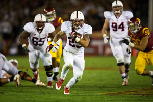

My name is Roger and I am currently a student at Stanford University pursuing a major in computer science with a focus on human computer interaction. I am a firm believer that design focused on humans has the potential to disrupt the way we see and interact with computers. Through design and technology, I hope to allow people to gain greater understanding of the world around them.
Sports

Stanford v USC (2013.11.16)
Stanford v Oregon (2013.11.07)
People

Seattle (2013.08.10)

Skydiving (2013.08.03)